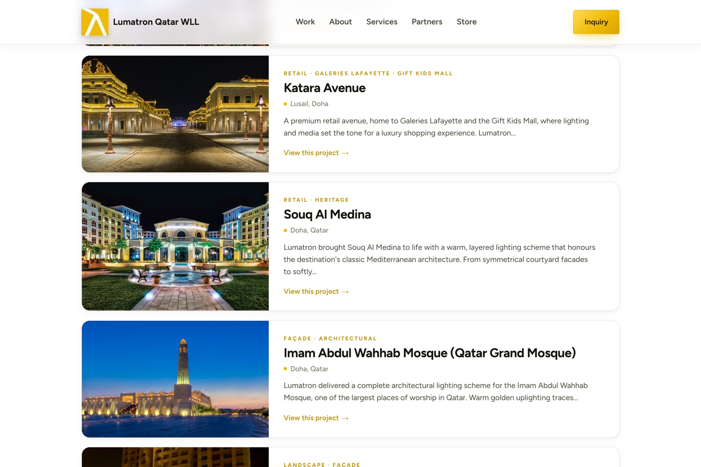
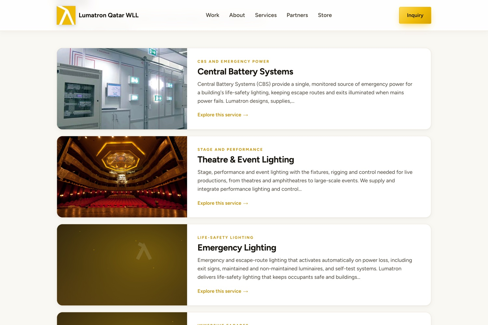
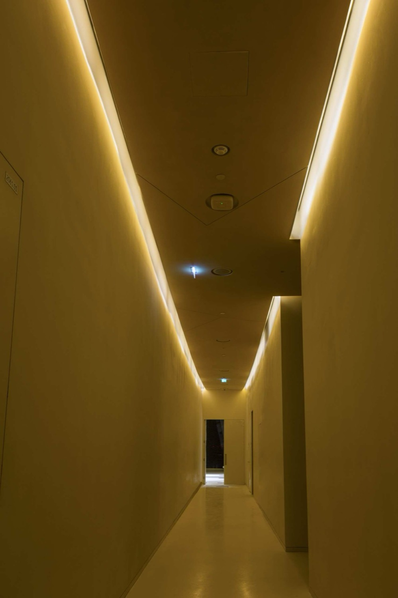
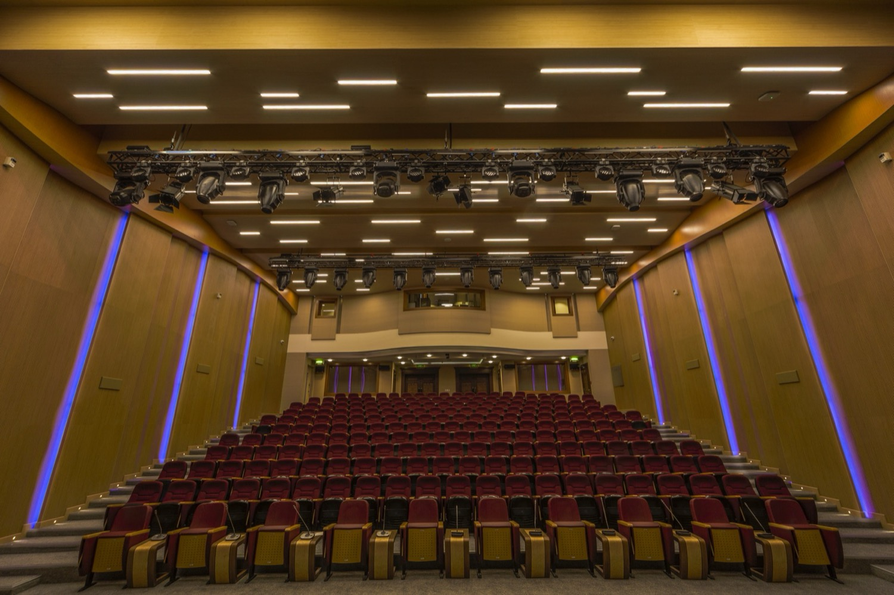
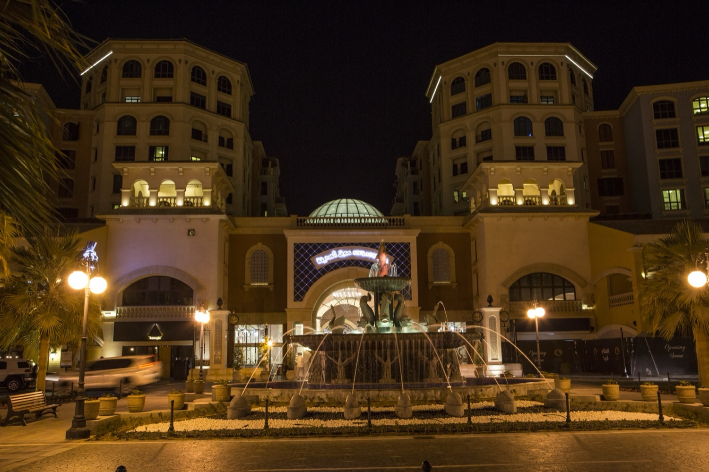
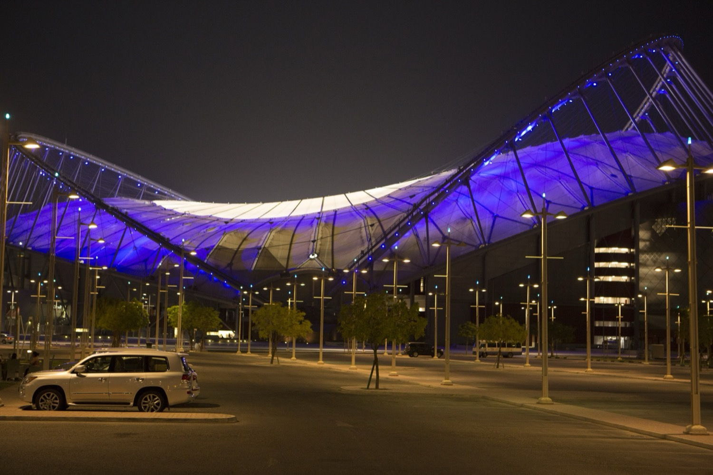

Client work — 2026
Lumatron
Lumatron has been lighting buildings in Qatar since 1977. Their portfolio includes work you can walk up to — the National Museum, Katara Theatre, Khalifa Stadium, Souq Al Medina. What they did not have was a site that showed any of it. I built the theme, the storefront and the environment the whole thing runs in. It is live at lumatron.qa.
- Role
- Theme development and delivery
- Stack
- WordPress, PHP, WooCommerce
- Catalogue
- 39 in-stock products
- Status
- Live at lumatron.qa
The site, live



The photography it is built around
Most of the value of this site is photographic. Lumatron's argument for itself is the portfolio, so the theme is built around project pages rather than marketing copy, with a dedicated template for a single project and another for a single service.




Eleven projects in total, alongside ten service lines that run from theatre and event lighting through media screens, solar, central battery systems, 3D mapping and explosion-proof fixtures, each cross-linked to the projects where it was used.
A theme that sets itself up
The client is a lighting contractor, not a WordPress administrator. Handing them an empty theme and a list of forty pages to create by hand would have guaranteed the site never launched. So the theme seeds itself.
- On activation, an installer creates every Service and Project entry, plus the Our Story and Partners pages, with their content already in place.
- Custom templates for single projects, single services, the front page, Our Story and Partners, each with its own layout rather than one generic page template.
- WooCommerce support is declared by the theme — product gallery zoom, lightbox and slider — with a dedicated WooCommerce template so the shop matches the rest of the site.
- The catalogue imports from one CSV of 39 products, with SKUs, categories, descriptions, prices, images and stock status.
Handover
The development environment is a Docker Compose stack — WordPress, MariaDB and a WP-CLI container — with the theme mounted straight into the container, so template, CSS and JavaScript edits appear on refresh with no rebuild step.
The deliverable was not just the code. It was a packaged theme archive, the product CSV, and a written deployment runbook for their host, covering the one thing most likely to go wrong: rewriting the image URLs in the catalogue to match the live domain before importing, rather than after discovering every product photo is broken.
docker compose up -d # WordPress + MariaDB + WP-CLI
# Appearance → Themes → Lumatron (seeds services, projects, pages)
# Plugins → WooCommerce → activate
# Products → Import → products.csv